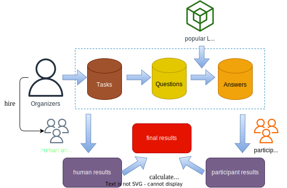

Introduction
The Automatic Evaluation of LLMs (AEOLLM) task is a new core task in NTCIR-18 to support in-depth research on large language models (LLMs) evaluation. As LLMs grow popular in both fields of academia and industry, how to effectively evaluate the capacity of LLMs becomes an increasingly critical but still challenging issue. Existing methods can be divided into two types: manual evaluation, which is expensive, and automatic evaluation, which faces many limitations including the task format (the majority belong to multiple-choice questions) and evaluation criteria (occupied by reference-based metrics). To advance the innovation of automatic evaluation, we proposed the Automatic Evaluation of LLMs (AEOLLM) task which focuses on generative tasks and encourages reference-free methods. Besides, we set up diverse subtasks such as summary generation, non-factoid question answering, text expansion, and dialogue generation to comprehensively test different methods. We believe that the AEOLLM task will facilitate the development of the LLMs community.
Methodology
- First, we choose four subtasks as shown in the table below:
- Second, we choose a series of popular LLMs during the competition to generate answers.
- Third, we manually annotate the answer sets for each question, which will be used as gold standards for evaluating the performance of different evaluation methods.
- Last, we will collect evaluation results from participants and calculate consistency with manually annotated results. We will use Spearman correlation coefficient (S) and Kendall’s tau (τ ) as the evaluation metrics.
| Task | Description | Dataset |
|---|---|---|
| Summary Generation (SG) | write a summary for the specified text | XSum: over 226k news articles |
| Non-Factoid QA (NFQA) | construct long-form answers to open-ended non-factoid questions | NF_CATS: 12k non-factoid questions |
| Text Expansion (TE) | given a theme, participants need to generate stories related to the theme | WritingPrompts: 303k story themes2 |
| Dialogue Generation (DG) | generate human-like responses to numerous topics in daily conversation contexts | DailyDialog: 13k daily conversation contexts |
Datasets
- Summary Generation (SG): Xsum: A real-world single document news summary dataset collected from online articles by the British Broadcasting Corporation (BBC) and contains over 220 thousand news documents.
- Non-Factoid QA (NFQA): NF_CATS: A dataset contains exam_x0002_ples of 12k natural questions divided into eight categories.
- Text Expansion (TE): WritingPrompts: A large dataset of 300K human-written stories paired with writing prompts from an online forum.
- Dialogue Generation (DG): DailyDialog: A high-quality dataset of 13k multi-turn dialogues. The language is human-written and less noisy.
Important Dates
All deadlines are at 11:59pm in the Anywhere on Earth (AOE) timezone.
Kickoff Event: 👉March 29, 2024
Dataset Release: May 1, 2024
System Output Submission Deadlinen: Jan 15, 2025
Evaluation Results Release: Feb 1, 2025
Task overview release (draft): Feb 1, 2025
Submission Due of Participant Papers (draft): March 1, 2025
Camera-Ready Participant Paper Due: May 1, 2025
NTCIR-18 Conference: Jun 10-13 2025
Evaluation Measures
Data and File format
Submitting runs
TBA
Organisers
Yiqun Liu [yiqunliu@tsinghua.edu.cn] (Tsinghua University)
Qingyao Ai [aiqy@tsinghua.edu.cn] (Tsinghua University)
Junjie Chen [chenjj826@gmail.com] (Tsinghua University)
Zhumin Chu [chuzm19@mails.tsinghua.edu.cn] (Tsinghua University)
Haitao Li [liht22@mails.tsinghua.edu.cn] (Tsinghua University)
Please feel free to contact us! 😉
References
[1] Carterette, B., Kanoulas, E., Hall, M., & Clough, P. (2014). Overview of the TREC 2014 session track. pdf
[2] Yang, G. H., & Soboroff, I. (2016). TREC 2016 Dynamic Domain Track Overview. In TREC. pdf
[3] Zhang, F., Mao, J., Liu, Y., Ma, W., Zhang, M., & Ma, S. (2020, July). Cascade or Recency: Constructing Better Evaluation Metrics for Session Search. In Proceedings of the 43rd International ACM SIGIR Conference on Research and Development in Information Retrieval (pp. 389-398). pdf
[4] Chen, J., Mao, J., Liu, Y., Zhang, M., & Ma, S. (2019, November). TianGong-ST: A New Dataset with Large-scale Refined Real-world Web Search Sessions. In Proceedings of the 28th ACM International Conference on Information and Knowledge Management (pp. 2485-2488). pdf
[5] Liu, M., Liu, Y., Mao, J., Luo, C., & Ma, S. (2018, June). Towards designing better session search evaluation metrics. In The 41st International ACM SIGIR Conference on Research & Development in Information Retrieval (pp. 1121-1124). pdf